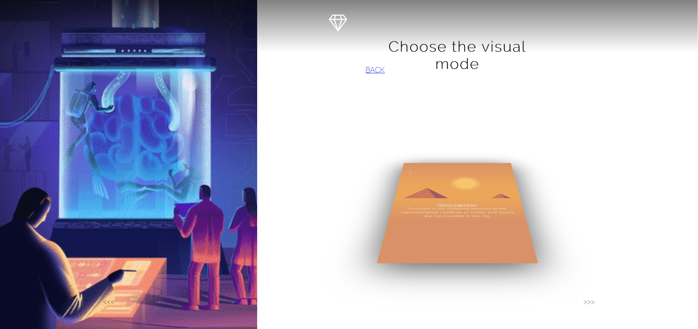
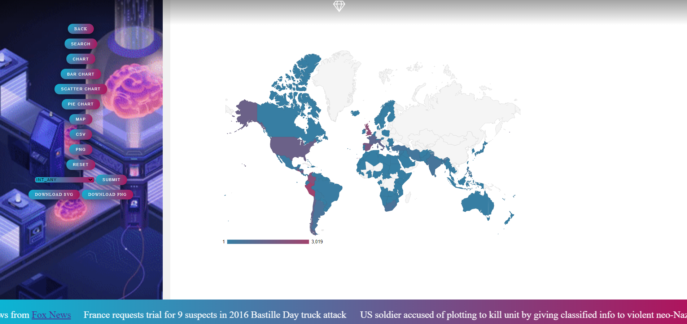

User Guide
Presentation Page
Here you can find details about the visualizer, by scrolling, or you can press “Explore in order to proceed to the next page”
Visualization modes
Here you can read about the multiple data representations. After you are done, press thr diamond-shaped button, to go to the application main screen 
The main screen allows
-
Data Filtering
Choose a filter type from the current dropdown and press submit, then another dropdown will appear, containing possible filter values for the filter you’ve just picked. For some filters, you can also specify an interval, if the “Between” button is present. After all the filters are added, press search. -
Data Visualization
After you’ve picked your filters, you may pick your visualization method by pressing one of “map”, “pie chart”, “scatter chart”, “bar chart”, “chart”, “csv”, “png” -
Data Save
You can choose to save data either as csv, png or svg by clicking hte download buttons. 